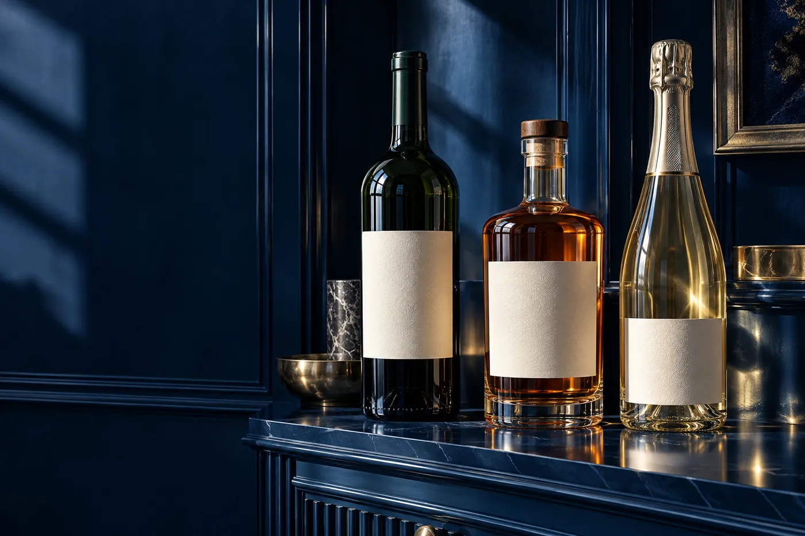
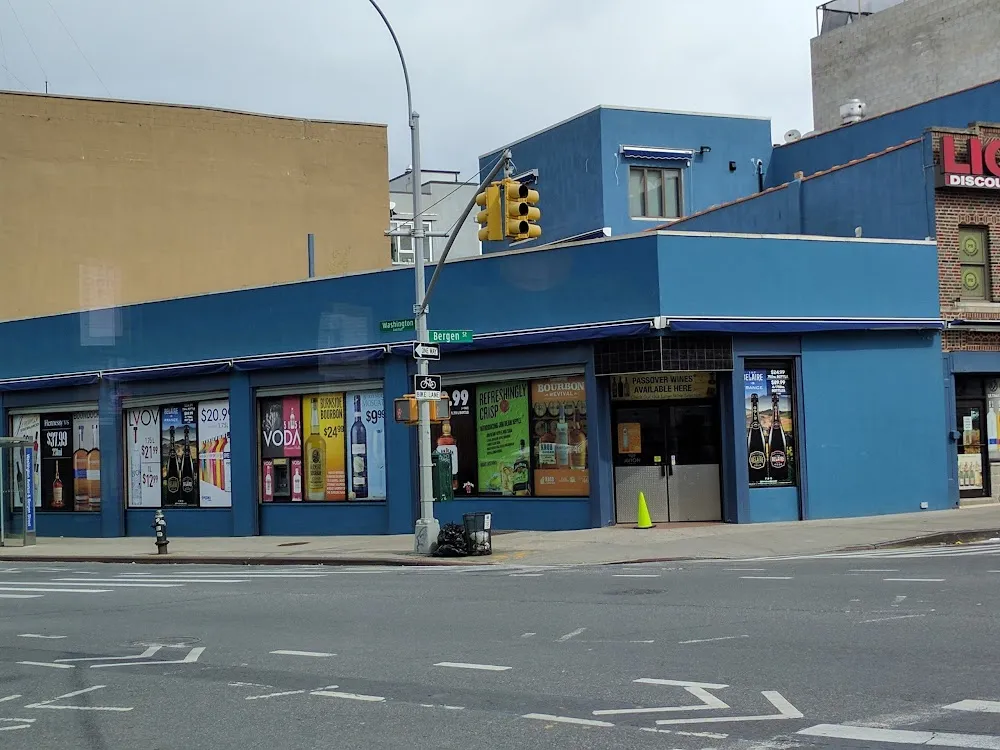

The Arena
bottle room
Wines and spirits on Washington Avenue. Explore the sample cabinet, then ask Arena about the bottles on its shelves.
Enter the collection →633 Washington Ave, Brooklyn, NY 11238

Choose your occasion
Start with the kind of bottle you have in mind. The collection keeps the label, format and enquiry together.
A bottle for the tableStart with the wine collection and ask the shop about producer, grape and vintage.
Explore wines →Demo selection. Confirm products, prices and availability with the store.
Inside the cabinet
A sample shelf with space for the producer, vintage, bottle size and the details that make a choice easier.


Washington & Bergen
Arena Wine & Liquor Depot is at 633 Washington Ave, Brooklyn, NY 11238. Explore the business photographs, then plan a visit or call to ask about the current selection.
Plan your visit →